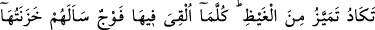
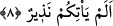

denilir ki, “bu işi şu hâlin galeyânı esnâsında derhal yaptım” demektir. Nitekim
Müfredat’ta bu şekilde yer almaktadır.
Bâzı âlimlere göre onların cehennemin uğultusunu işitmeleri, cehenneme atıldıkları
esnâda olacaktır. Âyette yer alan “izâ” bunu ifâde etmektedir. “Ve hiye tefur” yâni
“cehennem kaynarken” ifâdesinden anlaşılan ise bunun atıldıktan sonra gerçekleşeceği
şeklindedir. Ancak içinde her ne varsa, onunla birlikte cehennem kaynıyorsa o zaman
atılmadan işitebilirler. Buna göre “iza ulkû” ifâdesi “oraya atıldıkları zaman” şeklinde
değil de “oraya atılmaları murâd edildiği zaman” şeklinde tevil edilir ya da “atılmaları
yaklaştığında” şeklinde yorumlanabilir. Çünkü şehiyk sesi, cehenneme atılmadan önce
işitilmeyi gerektirir.
8. Neredeyse cehennem öfkesinden çatlayacak! Her ne zaman oraya bir topluluk
atılsa, onun bekçileri onlara: Size, (bu azap ile) korkutucu bir peygamber gelmemiş
miydi? diye sorarlar.
“Neredeyse cehennem öfkesinden çatlayacak!” “Temeyyüz” birbirine benzeyen
şeyler arasında kopma ve ayrılma anlamına gelir. “Gayz” gazabın en şiddetli hâlidir.
Buna göre âyet-i kerîmenin mânâsı “cehennem onlara gazabının şiddetinden neredeyse
paramparça olacak”, bir başka ifâdeyle “cehennem yapısı itibariyle neredeyse
paramparça” veya “cehennem kâfirlere olan öfkesinin şiddetinden neredeyse parça
parça olacak” demektir.
Burada istiâre-i tasrîhıyye vardır. Cehennemlikler vâsıtasıyla ateşin tutuşturulması ve
onlara şiddetli bir etki ile zarar vermesi gazaba gelen bir kimsenin bir başkasına gazap
etmesi ve ona zarar vermede aşırıya gitmesi hâline benzetilmiş ve gayz kelimesi bu
kullanımdan alınarak istiâre yoluyla cehennem hakkında kullanılmıştır.
İmam der ki, herhalde burada yer alan mecâzın sebebi şu olsa gerektir. İnsan gazab
ettiği zaman kalbindeki kan kaynamaya başlar ve mikdârı artar; sonra damarlar kan ile
dolar ve nihâyet kalp parçalanacak gibi bir hâle gelir.
el-Münâsebat’ta denir ki, burada tekâdu kelimesinin başındaki ta’lardan birisinin
hazfedilmesi iftirak ve ayrılık olacağına ve yine hızlı bir şekilde, neredeyse tam
mânâsıyla kavranamayacak bir biçimde ittisâl ve bitişme olacağına işâret etmektedir.
Bütün bunlar cehennemin efendisinin gazabı dolayısıyla olacaktır. Kıyâmet günü
insanlar mahşere bin yular ile sürüklene sürüklene getirilirler. Her yularda yetmişbin
melek olur, her bir melek o yulardan birisini çeker. Cehennem kininin şiddetinden
meleklere baskın gelir ve insanların üzerine hücum eder. Bütün yularlar paramparça
olur ve mahşer halkı kırılıp geçer. Cehennem şöyle der: Bugün andolsun ki Allah’ın
rızkını yeyip de O’ndan başkasına kulluk edenden mutlaka intikam alacağım. Cehennemi
bu insanlardan ancak ve ancak Peygamber Efendimiz (s.a.) alakoyar. Peygamberimiz